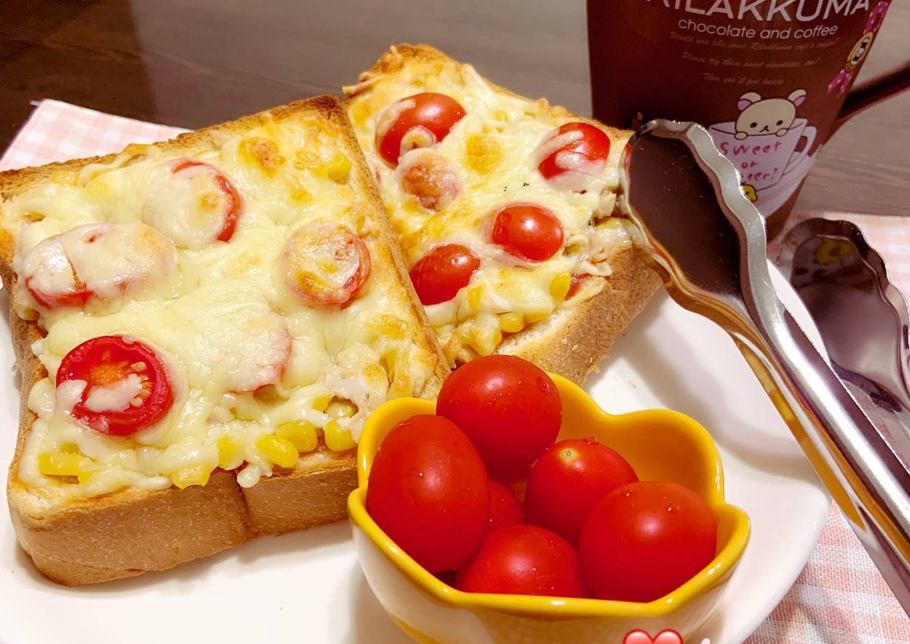

<html>

<head>

<title>吐司披薩（玉米鮪魚）</title>

</head>

<body bgcolor="#cccccc">

<body>


<h1>吐司披薩</h1>
<b>，孩子們吃膩了吐司 我就會把吐司烤成披薩，喜歡什麼材料自己搭配自己加<br>

愛吃什麼口味自己變化搭配
不會雷到 方便又美味。<p>


 <p>

<iframe width="560" height="315" src="https://www.youtube.com/embed/rUeObugEGhQ" frameborder="0" allow="accelerometer; autoplay; encrypted-media; gyroscope; picture-in-picture" allowfullscreen></iframe>


 <a href="index.html">酥皮蘋果派</a>
 <a href="03.html">草莓蛋糕</a>
 <a href="04.html">魷魚羹</a>
 <a href="05.html">心得</a>
<audio src="media/002.mp3"controls /> 
 

</body>

</html>